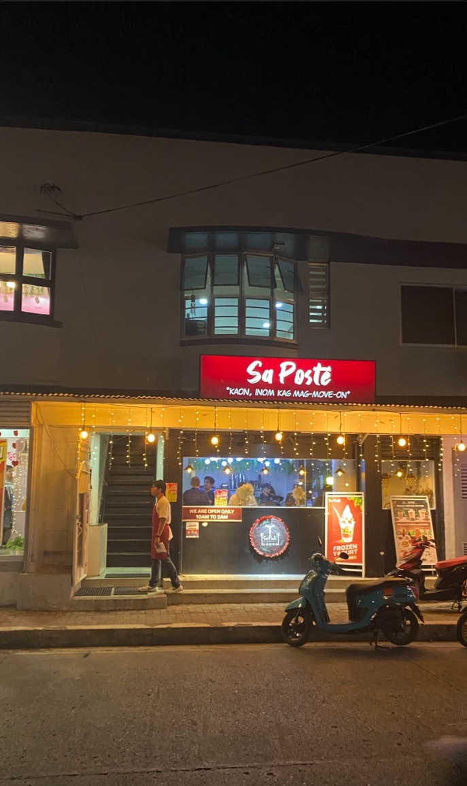

COFFEE
Sa Poste Iced Coffee
₱99Our house coffee blend served over ice, sweetened to your preference.

A LITTLE SOMETHING GOOD
Find a new favorite or come back to the one you already love.
 Sa Poste Café · Jaro
Sa Poste Café · Jaro
YOUR NEIGHBORHOOD CAFÉ
Good drinks, snacks to share, and a welcoming place to take a break. Stop by for a quick pick-me-up or stay awhile with friends.
KL Building, Del Carmen Street, Barangay Javellana, Jaro, Iloilo City
0930 407 7838 saposte888@gmail.com
COME ON IN
We’re at Del Carmen Street in Jaro. We’d love to see you.
Find Us